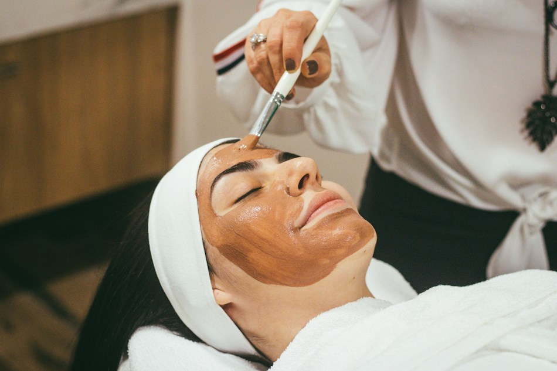
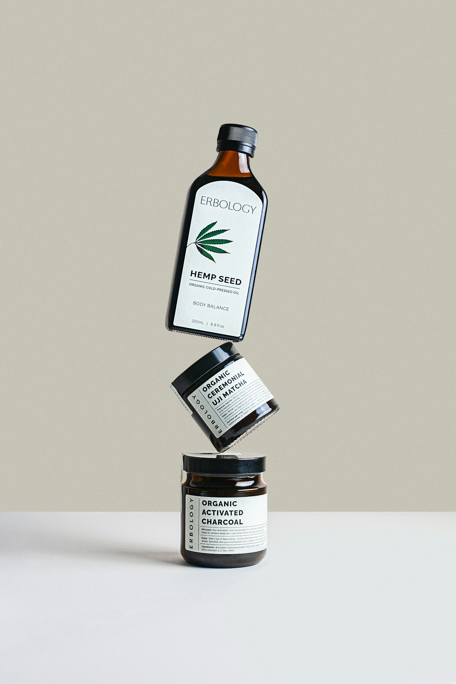
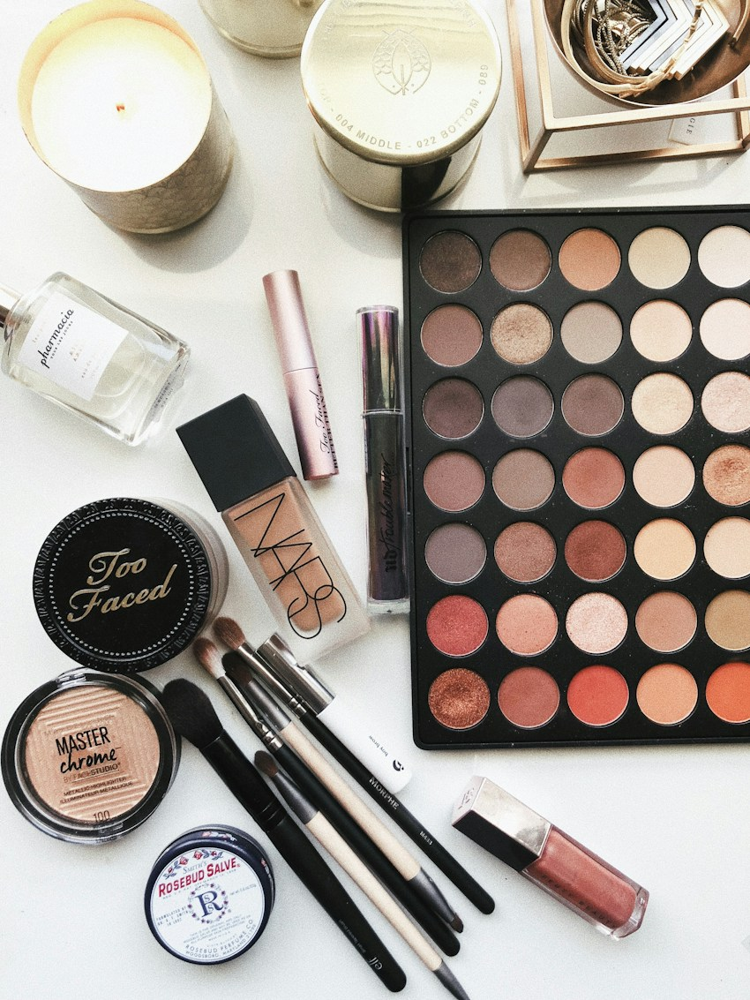
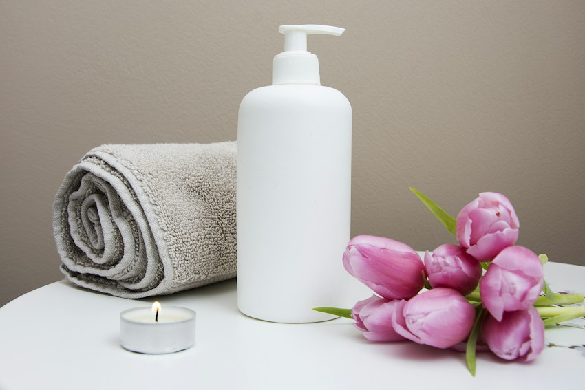

01 / CİLT BAKIMI
↗Cilt Ritüelleri
Yenilenme hissi veren kişisel bakım deneyimi.
Güzellik bir kalıba sığmaz. Kendi ışığını, kendi ritmini, kendi hikâyeni keşfet.
Ritüelleri keşfet
Güzelliği yeniden tanımlayan bir hayal: kişisel bakımın özgür ifadeyle buluştuğu, kendine ait hissettiren bir dünya.
Lumvelina, Aslin Tech için oluşturulmuş kurgusal bir marka konseptidir.Her dokunuşta biraz daha sen. Sana ait hissettiren üç farklı deneyim.

Yenilenme hissi veren kişisel bakım deneyimi.

Tarzını tamamlayan yaratıcı dokunuşlar.

Kendine ayırdığın sakin bir an.
Görseller temsili stok fotoğraflardır; gerçek işletme veya uygulama sonuçları değildir.
“En güzel hâlin,
kendin olduğun hâlin.”
Bir ritüel, bir tarih, bir saat seç. Lumvelina'nın örnek randevu deneyimini keşfet.